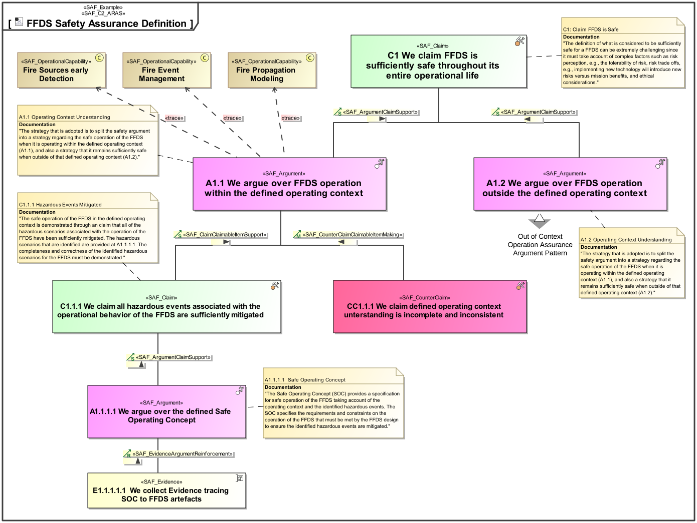

C2_ARAS Argumentation Assurance Viewpoint
| Domain | Aspect | Maturity |
|---|---|---|
| Common | Taxonomy & Structure |

The Argumentation Assurance Viewpoint presents claims backed up by arguments that are supported by evidence, together with the possibility to counter such claims in a similar manner.
The Argumentation Assurance Viewpoint supports the ability to present an evidence pattern, a structure of claims, arguments, and evidence, which is a common need in systems engineering. It applies equally to the establishment of traceability, definition of safety assurance cases, and even the presentation of business cases.
A block definition diagram (BDD) featuring a claim-argument-evidence pattern (CAE).
The following Stereotypes / Model Elements are used in the Viewpoint: